This responsive web page contains a showcase of hero blocks with various fonts and alignments, and with a range of background colours, gradients and images. You can display a finished version of this project on GitHub by clicking the image below.
Your first step is to download the files you need for this project.
Download the following compressed file to your computer:hero.zip
If a sub-folder named portfolio does not already exist inside your websites folder, create it now.
Uncompress the ZIP file into your websites/portfolio sub-folder as shown below.
This will create a sub-folder named hero inside your portfolio folder.
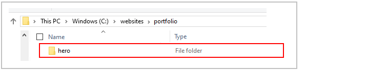
The folders, sub-folders and files for this 'Hero' project will be as shown below.
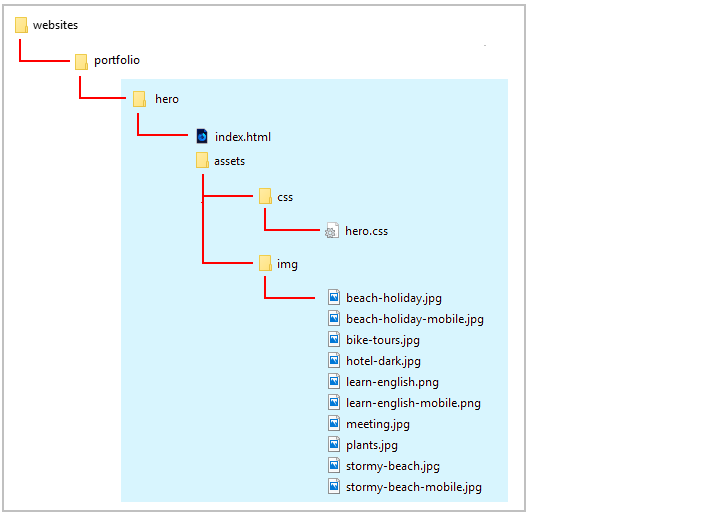
Start your text editor
Now you can begin to work with the files you have downloaded.
In Visual Studio Code or other text editor, open the following two downloaded files. The first is the web page; the second, the stylesheet:
index.html: You will find this in the main folder of your hero folder.
hero.css: You will find this in the assets/css/ sub-folder of the hero folder.
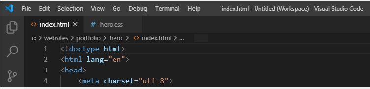
You can close any other files you may have open in your text editor.
Start your web browser
As you work with the HTML and CSS files, you will want to be able to display in your web browser the results of the changes you will be making.
In File/Windows Explorer, go to your C:\\websites\portfolio\hero sub-folder. There you can see the index.html web page for this project.
If your default web browser is Firefox Developer Edition or Google Chrome, double-click the index.html file to open it.
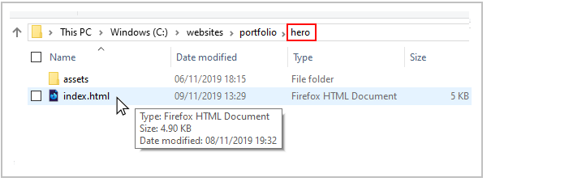
If not, right-click the index.html file and, from the pop-up menu displayed, choose Open with and then select either Firefox Developer Edition or Google Chrome to open the file.
In your web browser, the index.html file should look as shown below.
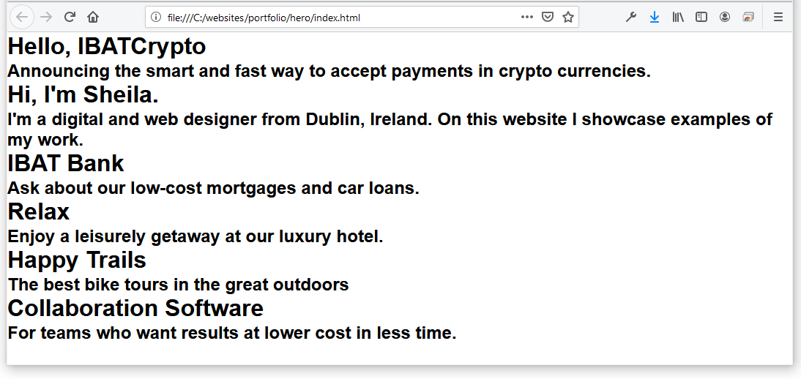
When you look at the source code of the index.html you can see six 'boxes' of content:
Each 'box' is created with a <div> successively named hero-block-1, hero-block-2, hero-block-3 and so on.
Inside each <div> are two items of text. The first is styled as a <h1>...</h1> heading and the second as a <h2>...</h2> heading. You can see the first three 'boxes' and their content below.
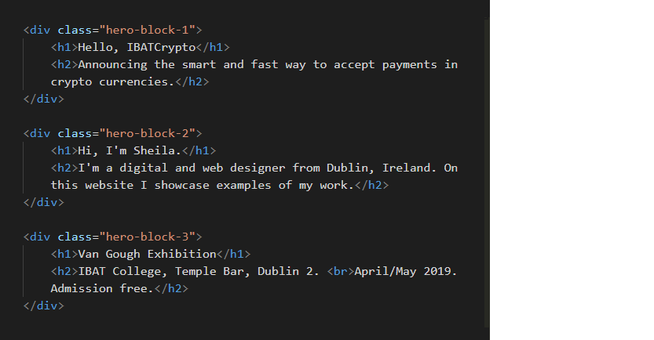
About hero blocks
So-called hero blocks (sometimes known as jumbotrons) are large and typically rectangular areas at the very top of a web page. They are the first item seen by users, and are intended to capture their attention and engage their interest in the web page.
All six hero blocks in this project have the following common features:
Block width: Like all <div> elements, hero blocks are 100% wide by default. In other words, whether on mobile, tablet, laptop or desktop screens, the hero block <div> elements will fill the full width of the screen area or ‘viewport.’So it is not necessary to set a width:100% for any of the hero blocks.
Block height: In the hero.css file, you will set the height of hero blocks typically to 360px for mobiles (screens up to 767px wide) and to 480px for tablets, laptops and desktops (screens that are at least 768px wide).
Under the hero blocks, there will be a margin-bottom of 40px for mobiles, and, for tablets/laptops/desktops, a margin-bottom of 80px.
Text is vertically centred vertically (top-to-bottom): This means that, within every hero block, there is equal space above the text content and below it.
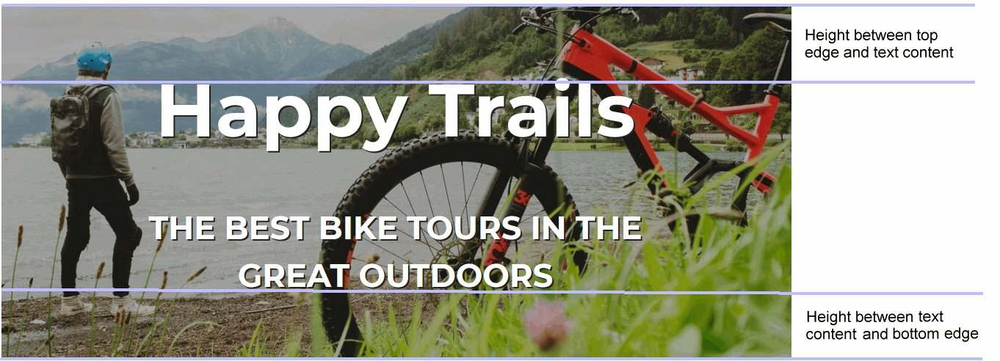
You achieve this by making each hero block a flexbox (display: flex), and then giving the block a flex-direction of column and a justify-content value of center. This vertical justification feature is available only to divs that are set as flexbox divs.
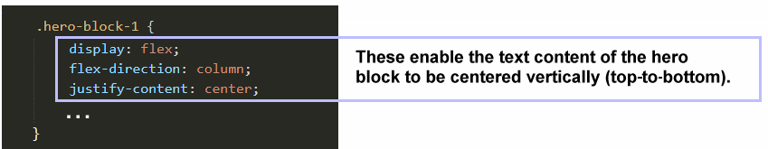
A few points to note about the text content of the six hero blocks:
The text is formatted as <h1>...</h1> and <h2>...</h2> headings.
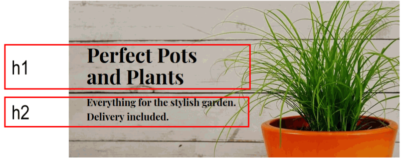
To add some blank space after each <h1> heading and before the <h2> heading that follows it, the <h1> headings have a margin-bottom of between 5% and 10% for mobiles, and between 1% and 4% for tablets/laptops/desktops.
For both the <h1> and <h2> headings, the margin-top is set to zero.
And for <h2> headings, the margin-bottom is also always zero.
You do not need to set margin-top: 0 or margin-bottom: 0 for any of the <h1> or <h2> headings in the hero blocks because all margins are zeroed by the browser default values at the top of the stylesheet file.
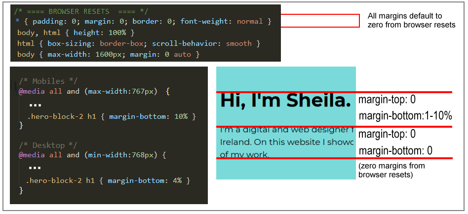
Fonts: Three Google Fonts are used for the text headings within the six hero blocks: Montserrat, Open Sans and Roboto Condensed.
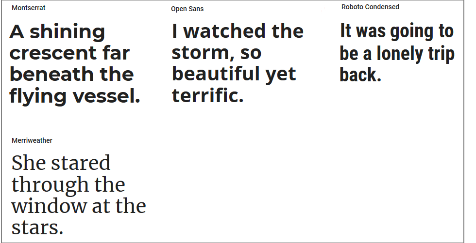
You can see the Google Fonts within the <head>...</head> section of the HTML file.
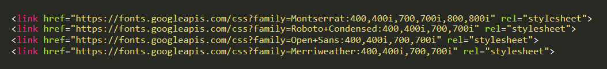
Fluid font sizes: For all six hero blocks, the fluid typographic equation is used to responsively size fonts to fit every screen width in the range from a minimum of 320 pixels to the maximum width set in the browser defaults of 1600 pixels.
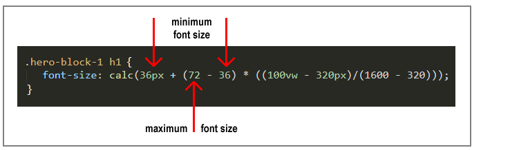
In the remainder of this project, you will build each of the six hero blocks. Your first step will be to create the CSS declarations for the first of the six hero blocks. These you will then copy-and-paste to use as a basis for styling the other ten hero blocks.
Hero block: 1
Follow these steps to create the styles for the <div>s named 'hero-block-1.'
In the hero.css file, under the comment /*== HERO BLOCK 1 ==*/, enter the following code. This will give your first block a solid background colour of blue and ensure that its content will be centred vertically (top-to-bottom).
Next, enter the styles for the two text headings within the first block. As you can see, the text is centre-aligned, coloured white, has a bold weight, and is in the Google Font named Open Sans:
Finally, within two responsive media queries, enter the styles that will vary according to screen size. As you can see, the text will be 80% wide on mobiles and 60% of the width of desktop screens. On mobiles, the bottom margin under the <h1> heading will be 10%. On desktops, it will be 4%.
Save the hero.css file and, in your web browser, view the effect on the hero-block-1 element in your index.html file. It should now look as shown below.
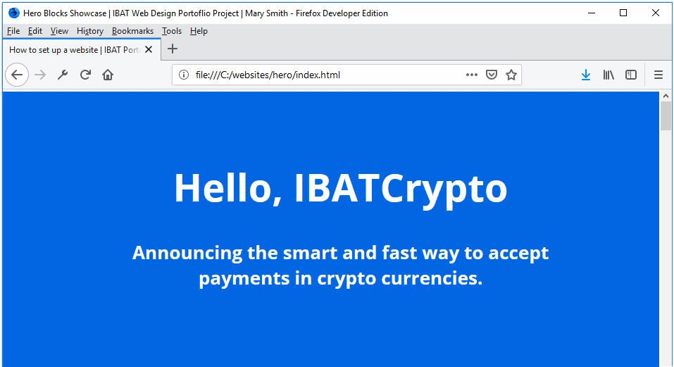
Hero block: 2
Follow these steps to create the CSS styles for the <div> in your index.html file named 'hero-block-2.'
In the hero.css stylesheet, copy and paste the following CSS styles under the comment line /*== HERO BLOCK 2 ==*/
For all screen sizes, you have changed the text colour from white (#fff) to black (#000) and background colour from blue (#0065f2) to green (#78d8da).
The text that was centre-aligned is now aligned to the left (text-align: left).
The font has been changed from Open Sans to Montserrat.
As the <h2> heading in this block contains more text than in the first block, you have increased the inter-line spacing (line-height: 1.5) to make the text easier to read.
The <h2> heading is no longer in bold (font-weight: normal).
Also, you have changed slightly the font sizes in both headings.
You do not need to make any changes to the styles within the two media queries.
Save the hero.css file and, in your web browser, view the effect on the hero-block-2 element in your index.html file. It should now look as shown below.
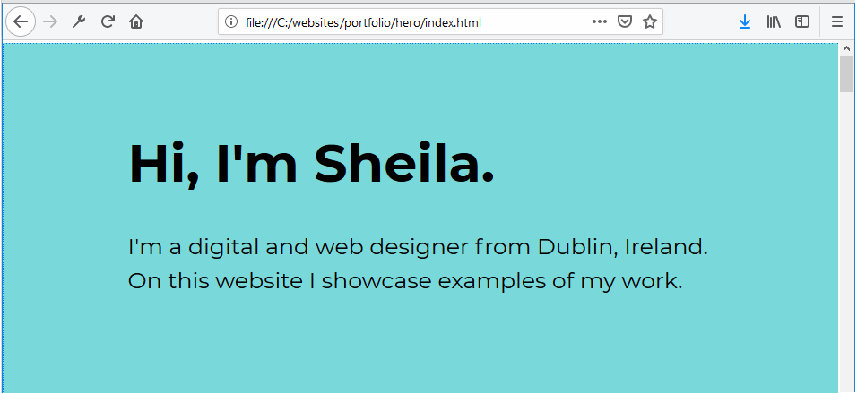
Hero block: 3
Follow these steps to create the CSS styles for the <div> in your index.html file named 'hero-block-3.'
In the hero.css stylesheet, copy and paste the following CSS styles under the comment line /*== HERO BLOCK 3 ==*
For all screen sizes, you have changed the text colour to white (#fff), and changed the font to Open Sans.
For the background of the hero block, you have used the CSS style of background-image. As its name suggests, this is typically used to set a background image to an element on a web page.
However, it also allows you to set two colour values that will change from one to another in a smooth gradient. You have used a different shade of the same purple colour for these two values, the first shade being slightly darker (#512d6d) than the second (#c42f9e).
You do not need to make any changes to the font sizes or the styles within the two media queries.
Save the hero.css file and, in your web browser, view the effect on the hero-block-3 element in your index.html file. It should now look as shown below.
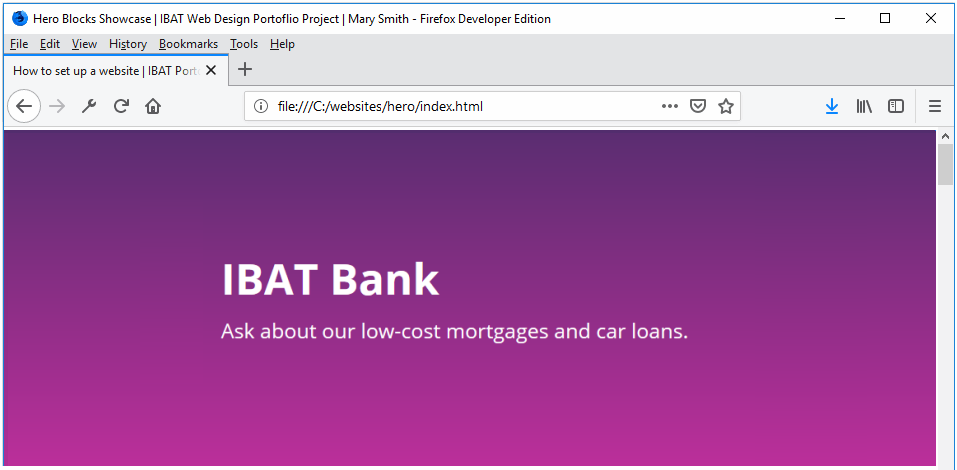
Hero block: 4
Follow these steps to create the CSS styles for the <div> in your index.html file named 'hero-block-4.'
In the hero.css stylesheet, copy and paste the following CSS styles under the comment line /*== HERO BLOCK 4 ==*/
For all screen sizes, you have made the following changes to the background of the hero block:
background-image: This sets the image named hotel-dark.jpg as the background for the 'hero-block-5' div.
background-size: The value of cover ensures that the background image always fills or 'covers' the full size of the div that contains it. This means that the image will be stretched or trimmed if its aspect ratio is not exactly the same as that of the container div.
background-position: This CSS property sets the vertical (top-bottom) and horizontal (left-right) position of the image within the block whenever the height and/or width of the image is different from the displayed height and/or width of the block that contains it. By default, a background image positioned is at the top-left corner of its container div.
background-repeat: The value of none prevents the background image from being repeated vertically and/or horizontally (the default value) whenever its height and/or width is less than that of its container div.
For the <h1> and <h2> headings, you changed the alignment (text-align: center), increased the font sizes and added a text-shadow property. This last property makes the text easier to read against a background image.
You do not need to make any changes to the styles within the two media queries.
Save the hero.css file and, in your web browser, view the effect on the hero-block-4 element in your index.html file. It should now look as shown below.
Hero block: 5
Follow these steps to create the CSS styles for the <div> in your index.html file named 'hero-block-5.'
In the hero.css stylesheet, copy and paste the following CSS styles under the comment line /*== HERO BLOCK 5 ==*/
For all screen sizes, make these two changes to the background image:
Background image file: Set a new image named bike-tours.jpg as the background for the hero block.
Background image overlay: Add a semi-opaque overlay behind the text and in front of the background image. This is to make the text more readable against the image behind it. The overlay image colour is expressed in RGB (Red, Green, Blue) code, where 0,0,0 is the colour black. The level of opacity is measured on a scale of 0 to 1. The value of 0.3 means 30% opaque (or 70% transparent).
For the <h1> and <h2> headings, you changed the font to Roboto Condensed. Also for the <h2> text, the text-transform: uppercase value ensures its characters are always displayed in capitals.
For mobiles and desktops, the widths of the <h1> and <h2> headings are increased to 80%.
For mobiles, the <h1> line-height is reduced to 1.2 and margin-bottom increased from 5% to 10%.
For desktops, the margin-bottom increased to from 1% to 5%.
Save the hero.css file and, in your web browser, view the effect on the hero-block-5 element in your index.html file. It should now look as shown below.
Hero block: 6
Follow these steps to create the CSS styles for the <div> in your index.html file named 'hero-block-6.'
In the hero.css stylesheet, copy and paste the following CSS styles under the comment line /*== HERO BLOCK 6 ==*/
Save the hero.css file and, in your web browser, view the effect on the hero-block-6 element in your index.html file. It should now look as shown below.
Animating text
In the final step below, you will animate the text headlines for the 'hero-1' block so that they slide in from the top of the web page. To generate the CSS code required for the animation effect, you will use the Animista website created by Ana Travas.
Go to this web page.Animista
and click the Try me button.
Across the top of the screen you can see a menu of main options (BASIC, ENTRANCES, EXITS ...). For each of these main options, you can choose from a range of sub-options displayed as white text inside black circles on a draggable sub-menu. Many of these sub-options also have sub-options of their own.
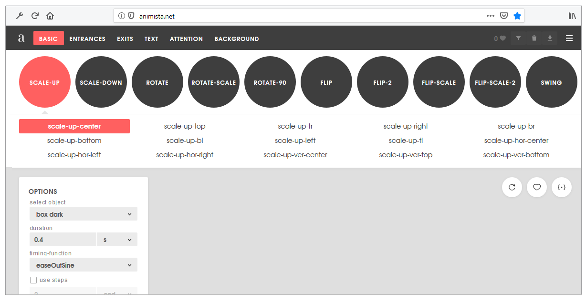
In the main top menu, click the ENTRANCES option. Next, click the red circle containing the SLIDE-IN sub-option. Finally, click sub-sub-option named slide-in-top.
At the right of the screen, click the {*} icon to display the CSS code that Animista has created for you.
With the Autoprefixer option selected, click the Copy Class button.
Paste the code into your hero.css file, at the end of the /*== HERO BLOCK 1 ==* block.
Return to the Animista screen, and click the Copy Keyframes button.
Paste that code in your hero.css file at the end of the /*== HERO BLOCK 3 ==* section.
Your final action in the hero.css file is to change the two colours used in the animation. Change the two occurrences of #19dcea to #f6e58d, and the two occurrences of #b22cff to #f1c40f. The pasted and edited code should now look as shown below. Save your CSS file.
In the index.html file, add the class named slide-in-top to the <h1> and <h2> headings inside the 'hero-block-1' block, and save the HTML file.
<divclass="hero-block-1">
<h1>Hello, IBATCrypto</h1>
<h2>Announcing the smart and fast way to accept payments in crypto currencies.</h2>
</div>
In your web browser, view the effect on the hero-block-1 element in your index.html file. You should now see the h1 and h2 headings slide in from the top of the web page.
The two headings slide down a little too quickly. In the CSS file, increase the time taken for the sliding animation from 0.5s to 1s shown below,
Resave your HTML file and view the result in yur web browser.
Update the meta tags
In the <head> of your index.html web page, within the <title> and <author> meta tags, you can see the name 'Mary Smith.'
Replace this with your own name, and save the index.html file.
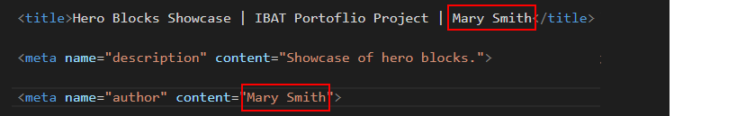
Update the Google Analytics ID
Near the top of your HTML file, just before the closing </head> tag, you can see a sample Google Analytics Tracking Code.
Each Google Tracking Code has a unique ID in its first and last line. Replace the sample Google Tracking ID with your own Google Tracking ID. The instructions for viewing your website’s unique Google Tracking ID are here.
When finished, save the index.html file.
Update the privacy pop-up code and message
You need to edit the ‘pop-up‘ privacy code and message in your web page.
Within the <head> at the top of your index.html file, you can see a link to the stylesheet for the privacy pop-up message. You do not need to change this.
At the bottom of your web page, just before the closing </body> tag, you can see the JavaScript code for the privacy pop-up message.
Near the end of the lines of the JavaScript code, you can see the web address of the privacy page. Change the ibat-web-dev.github.io username to your username on GitHub.
You will create the actual privacy.html web page in a later project.
When finished, save your index.html file.
The Privacy Code and Message
You can find the instructions for generating the JavaScript code here.
Copy and paste your HTML file into the box named Enter the Markup to validate.
Click the Check button.
If you see any errors, return to your index.html file, fix the errors, save the file, and copy the entire file again.
In the HTML Validator, click the Back button of your web browser to again display the Validate by Direct Input tab. Click once in the tab and paste in your corrected HTML file. Your new, pasted-in file will replace the earlier version. Finally, click the Check button.
Validate your CSS file
To check your CSS is correct, use the official W3C CSS Validation Service. Follow these steps.
Copy and paste your CSS file into the box named Enter the CSS you would like validated.
Click the Check button.
If you see any errors (other than those related to the fluid typographic equation and the webkit browser extension for Chrome and Safari, as shown below), return to your hero.css file in your text editor, fix the errors, save the file, and copy the entire file again.
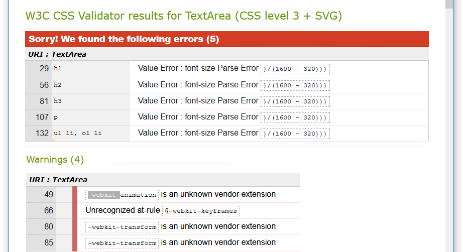
In the CSS Validator, click the Back button of your web browser to again display the By direct input tab. Click once in the tab and paste in your corrected CSS file. Your new, pasted-in file will replace the earlier version. Finally, click the Check button.
Upload your project to GitHub
The final step is to upload your project to GitHub.
All the files for this project are in a sub-folder named hero of your websites/portfolio folder.
So you will need to upload this hero sub-folder, which contains both files and other sub-folders, to your account on GitHub.
Open a new tab in your web browser and go to GitHub.com. If you are not already signed in to your GitHub account, sign in now.
On your GitHub home page, click the name of the repository ('repo') that holds your web pages. Its name will look as follows, where username is your chosen username on GitHub.
username.github.io
The next GitHub screen displayed should look as follows. Click on the portfolio folder.
On the next screen displayed, click the Upload files button.
In File/Windows Explorer on your computer, display your portfolio folder and then drag-and-drop the hero folder to the GitHub tab in your web browser.
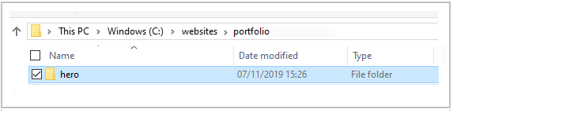
After uploading the hero folder, scroll down to the bottom of the GitHub screen, enter a short message in the Commit changes box, click the Commit changes button, and wait for the upload to complete.
The portfolio folder of your website repo on GitHub should now contain a sub-folder named hero. Click on this folder.
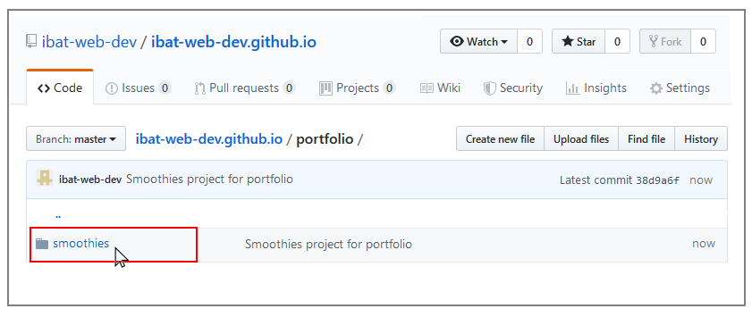
The hero folder should contain both the index.html file and the assets sub-folder.
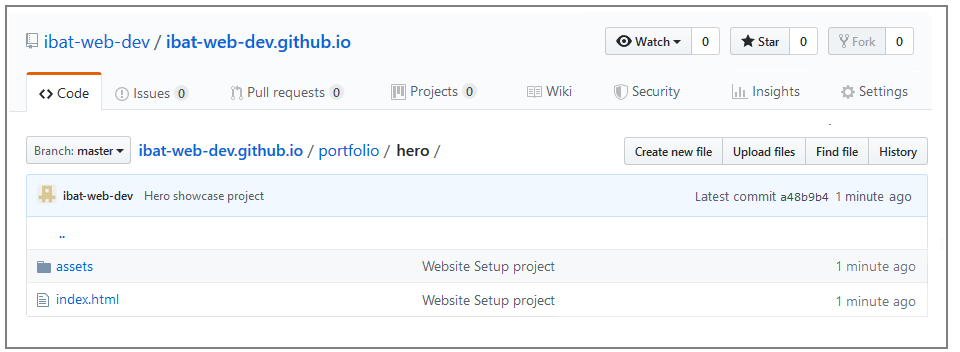
Click on the assets sub-folder to view its contents. You should see that it contains the two sub-folders named css and img.
Within the assets sub-folder, click on the css sub-folder. Check that it contains the stylesheet file.
Within the assets sub-folder, click on the img sub-folder. Check that it contains all the image files.
Your web page is now published on GitHub at a web address similar to the following, where username is the username you have chosen for your GitHub account:


 Near the end of the lines of the JavaScript code, you can see the web address of the privacy page. Change the ibat-web-dev.github.io username to your username on GitHub.
Near the end of the lines of the JavaScript code, you can see the web address of the privacy page. Change the ibat-web-dev.github.io username to your username on GitHub.